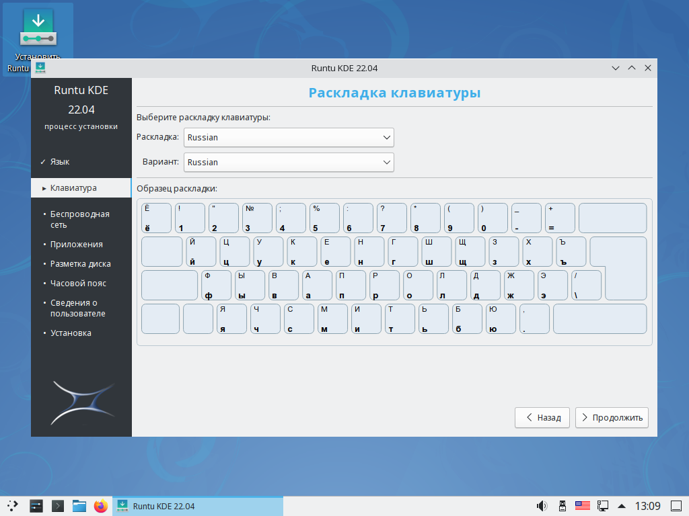

Запись образа Linux на флешку
В этой статье вы научитесь создавать загрузочную флешку с Linux в ОС Windows с помощью утилиты Rufus и установите Linux на компьютер.
В этой статье вы научитесь создавать загрузочную флешку с Linux в ОС Windows с помощью утилиты Rufus и установите Linux на компьютер.
Для начала нам необходимо загрузить утилиту с официального сайта rufus.ie.

Откройте официальный сайт и спуститесь вниз до заголовка Скачать и скачать утилиту по первой ссылке (Rufus 3.x).
После загрузки откройте утилиту. В окне Политика обновления Rufus выберите Нет.
Перед вами откроется интерфейс утилиты:

Для записи на диск потребуется:
Под заголовком Устройства в списке выберите вашу флешку. В нашем случае это USB (H:) [4ГБ].
Под заголовком Метод загрузки нажмите кнопку ВЫБРАТЬ и укажите скачанный образ системы (его можно скачать на официальном сайте дистрибутива Linux). В нашем случае это runtu-kde-22.04-amd64_20220702.iso (его можно скачать по ссылке).
Другие параметры нам изменять не нужно, поэтому можно нажать кнопку СТАРТ. Начнется запись образа на флешку.
В появившемся окне выбираем Записать в ISO-образ режиме (Рекомендуется) и жмем OK.
В последующих окнах везде соглашаемся, нажав Да или OK (все данные на флешке будут удалены).
Начнется копирование файлов на флешку, прогресс которого можно будет отследить под заголовком Статус. Обычно занимает от нескольких минут, до десятка минут, в зависимости от скорости флешки.
После завершения копирования в статус баре будет написано Готов. Утилиту можно выключить.
Для установки системы необходимо перезагрузить компьютер и зайти в Boot Menu. Как туда попасть подробно рассказано в этой статье.
После того как зайдете в Boot Menu необходимо выбрать вашу флешку, на которую записан образ Linux.
После загрузки появится меню, в котором необходимо выбрать Try Runtu KDE without installing [RU] (в других Linux это меню может отличаться).
После загрузки появится рабочий стол системы с ярлыком установки ОС. На данном этапе вы можете ознакомится с системой поближе.
Если вас всё устраивает, запустите ярлык установки Установить Runtu KDE на рабочем столе.
На данном этапе необходимо выбрать язык, который будет установлен в системе. После выбора нажмите Продолжить.
На данном этапе необходимо выбрать раскладку клавиатуры (в случае русской раскладки менять ничего не надо). После выбора нажмите Продолжить.
На данном этапе необходимо выбрать нужные вам опции. При наличии подключения к интернету рекомендуется выбирать все галочки, это сэкономит вам время в будущем. После выбора нажмите Продолжить.
На данном этапе необходимо выбрать диск на котором будет установлена система. Если на вашем компьютере установлен только один диск, ничего изменять не нужно. После выбора нажмите Продолжить.
Нажмите Продолжить (все данные на диске будут удалены).
На данном этапе необходимо выбрать часовой пояс. После выбора нажмите Продолжить.
На данном этапе необходимо настроить учетную запись:
После выбора нажмите Продолжить.
На данном этапе производится установка системы. Процесс может занять от нескольких десятков минут до нескольких часов (в зависимости от скорости диска и мощности процессора).
Когда процесс завершится, вам будет предложено вытащить флешку и перезагрузиться. Не забудьте отключить в BIOS загрузку с внешних дисков, если вы включали её.
Когда вы перезагрузитесь и перед вами появится рабочий стол вашей Linux